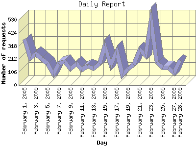

Report generated by Analog 6.0 and Report Magic 2.21
|
Web Server Statistics for "Harish Narayanan (hnarayan) - February 2005" Report generated by Analog 6.0 and Report Magic 2.21 |
The Daily Report identifies the activity for each day within the reporting period. Remember that one page hit can result in several server requests as the images for each page are loaded.

| Day | Number of requests | Number of bytes transferred | Percentage of the bytes | Percentage of the requests | |
|---|---|---|---|---|---|
| 1. | February 1, 2005 | 371 | 26.654 MB | 11.76% | 6.71% |
| 2. | February 2, 2005 | 217 | 5.355 MB | 2.36% | 3.92% |
| 3. | February 3, 2005 | 254 | 8.788 MB | 3.88% | 4.59% |
| 4. | February 4, 2005 | 214 | 7.324 MB | 3.23% | 3.87% |
| 5. | February 5, 2005 | 174 | 7.192 MB | 3.17% | 3.15% |
| 6. | February 6, 2005 | 89 | 4.324 MB | 1.91% | 1.61% |
| 7. | February 7, 2005 | 174 | 8.216 MB | 3.62% | 3.15% |
| 8. | February 8, 2005 | 190 | 10.049 MB | 4.43% | 3.43% |
| 9. | February 9, 2005 | 132 | 6.991 MB | 3.08% | 2.39% |
| 10. | February 10, 2005 | 175 | 10.243 MB | 4.52% | 3.16% |
| 11. | February 11, 2005 | 128 | 8.789 MB | 3.88% | 2.31% |
| 12. | February 12, 2005 | 153 | 5.355 MB | 2.36% | 2.77% |
| 13. | February 13, 2005 | 133 | 7.034 MB | 3.10% | 2.40% |
| 14. | February 14, 2005 | 175 | 8.017 MB | 3.54% | 3.16% |
| 15. | February 15, 2005 | 318 | 14.184 MB | 6.26% | 5.75% |
| 16. | February 16, 2005 | 163 | 5.002 MB | 2.21% | 2.95% |
| 17. | February 17, 2005 | 273 | 6.563 MB | 2.89% | 4.93% |
| 18. | February 18, 2005 | 85 | 5.284 MB | 2.33% | 1.54% |
| 19. | February 19, 2005 | 131 | 9.960 MB | 4.39% | 2.37% |
| 20. | February 20, 2005 | 166 | 7.295 MB | 3.22% | 3.00% |
| 21. | February 21, 2005 | 286 | 12.328 MB | 5.44% | 5.17% |
| 22. | February 22, 2005 | 241 | 4.947 MB | 2.18% | 4.36% |
| 23. | February 23, 2005 | 522 | 12.138 MB | 5.35% | 9.43% |
| 24. | February 24, 2005 | 185 | 7.319 MB | 3.23% | 3.34% |
| 25. | February 25, 2005 | 142 | 3.367 MB | 1.49% | 2.57% |
| 26. | February 26, 2005 | 141 | 6.485 MB | 2.86% | 2.55% |
| 27. | February 27, 2005 | 99 | 1.947 MB | 0.86% | 1.79% |
| 28. | February 28, 2005 | 202 | 5.585 MB | 2.46% | 3.65% |
Most active day February 23, 2005 : 213 pages sent. 522 requests handled. 12,727,532.00 served.
Daily average: 197 requests handled. 8.098 MB served.
This report was generated on March 9, 2005 00:38.
Report time frame February 1, 2005 00:39 to February 28, 2005 23:35.
| Web statistics report produced by: | |
 Analog 6.0 Analog 6.0 |  Report Magic 2.21 Report Magic 2.21 |